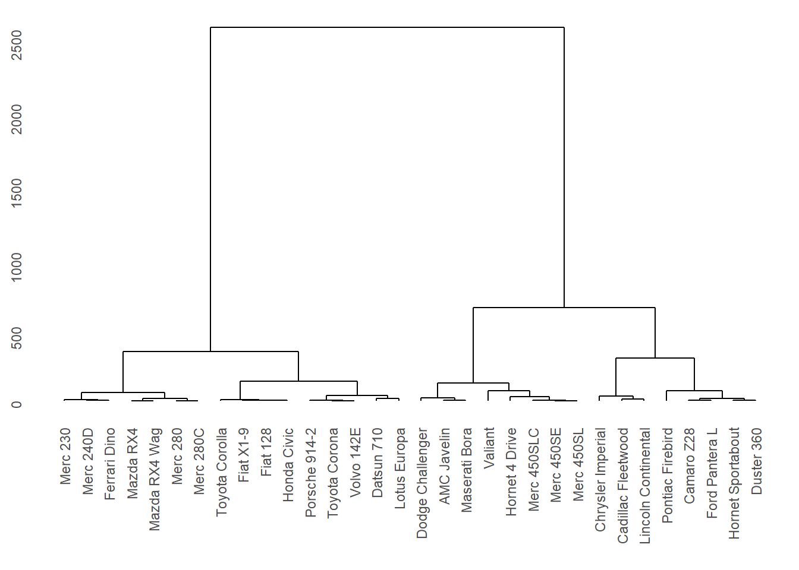
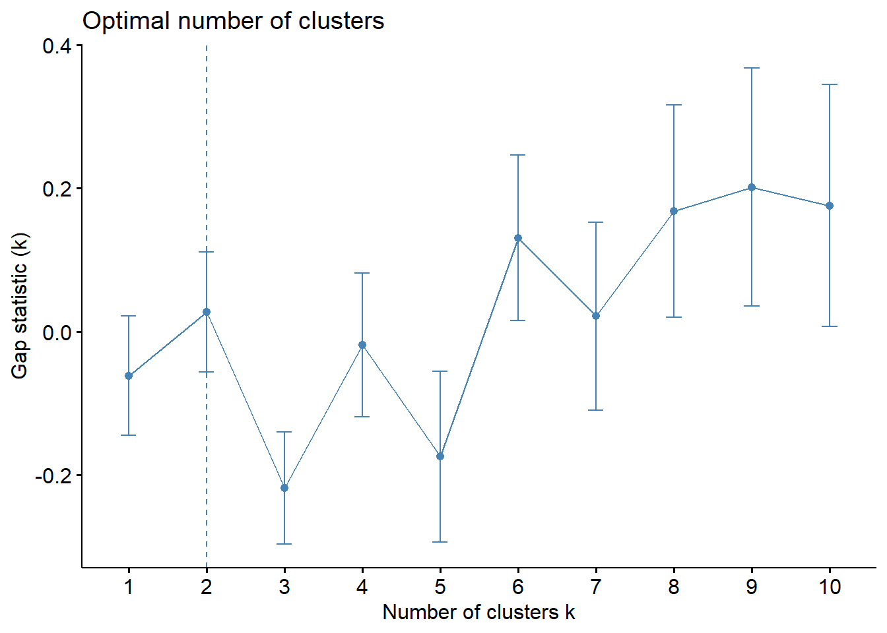
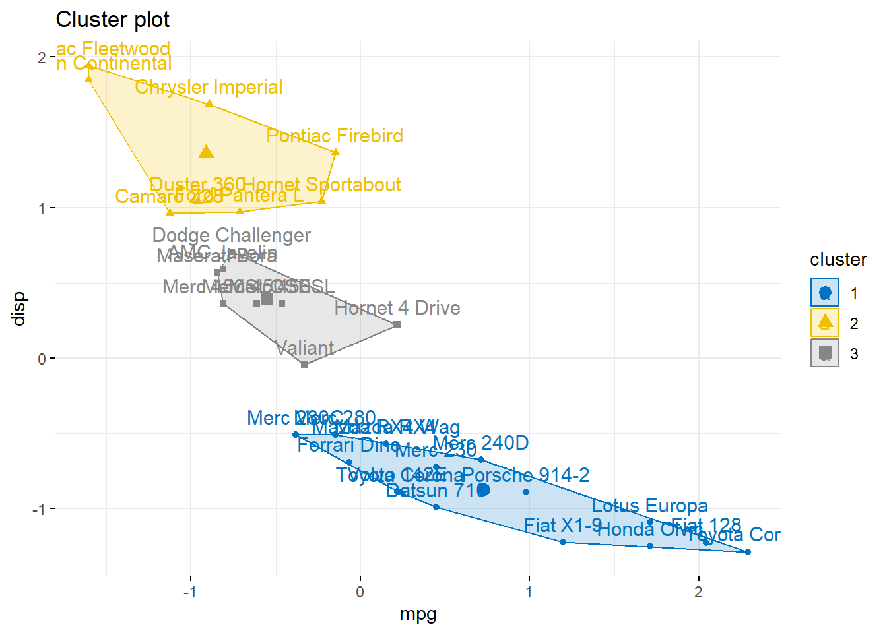
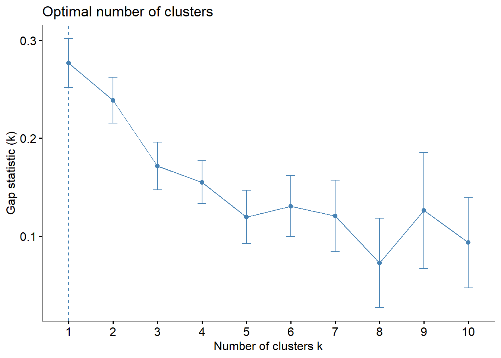
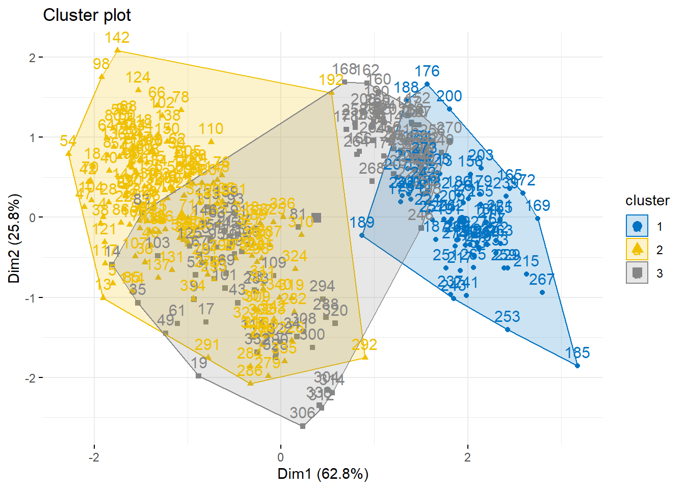
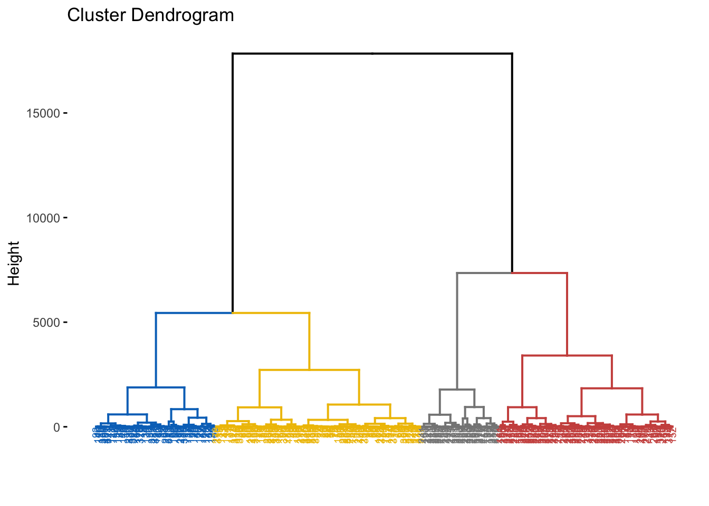
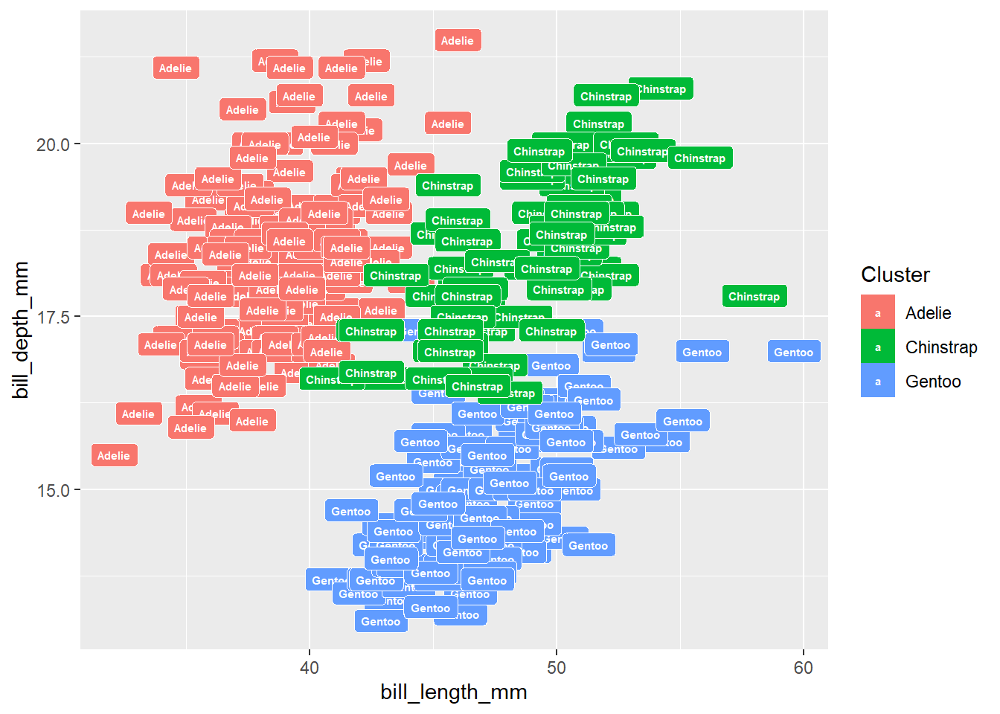
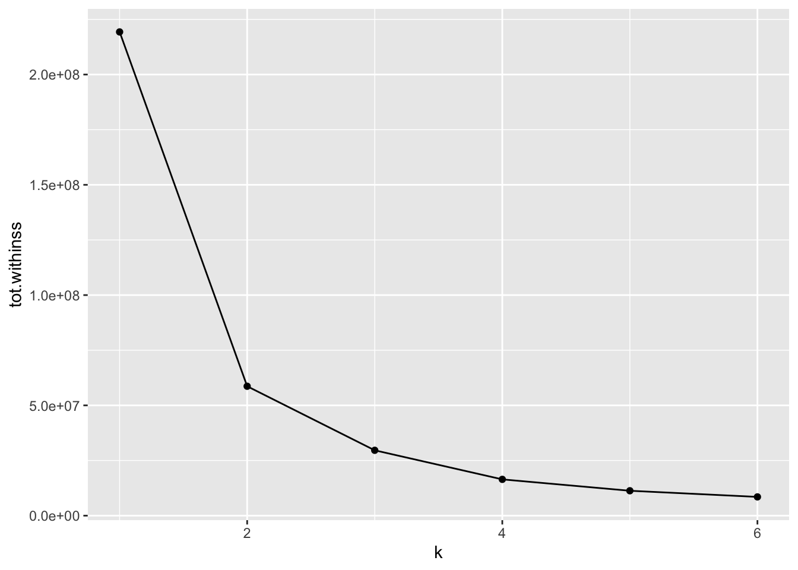
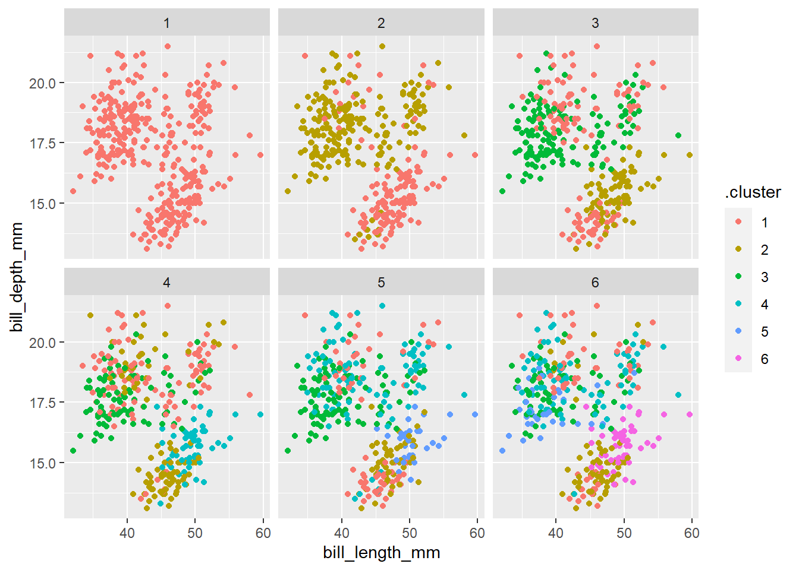

pacman::p_load(tidyverse, magrittr, palmerpenguins,
ggdendro, broom, cluster, factoextra,
pheatmap, tidyclust, conflicted)
conflict_prefer("select", "dplyr")
conflict_prefer("filter", "dplyr")
conflict_prefer("mutate", "dplyr")51 Clusteranalysen
Version vom Juni 30, 2023 um 15:14:01

“Cluster together like stars!” — Henry Miller
In diesem Kapitel wollen wir uns
Teilweise haben wir Überlagerungen mit dem Kapitel Kapitel 37
https://www.datanovia.com/en/lessons/cluster-analysis-example-quick-start-r-code/
https://www.r-bloggers.com/2021/04/cluster-analysis-in-r/
https://www.datanovia.com/en/lessons/clustering-distance-measures/#data-preparation
51.1 Genutzte R Pakete
Wir wollen folgende R Pakete in diesem Kapitel nutzen.
Am Ende des Kapitels findest du nochmal den gesamten R Code in einem Rutsch zum selber durchführen oder aber kopieren.
51.2 Daten
Woher
penguins_tbl <- penguinsSchauen
| species | island | bill_length_mm | bill_depth_mm | flipper_length_mm | body_mass_g | sex | year |
|---|---|---|---|---|---|---|---|
| Adelie | Torgersen | 39.1 | 18.7 | 181 | 3750 | male | 2007 |
| Adelie | Torgersen | 39.5 | 17.4 | 186 | 3800 | female | 2007 |
| Adelie | Torgersen | 40.3 | 18.0 | 195 | 3250 | female | 2007 |
| Adelie | Torgersen | NA | NA | NA | NA | NA | 2007 |
| Adelie | Torgersen | 36.7 | 19.3 | 193 | 3450 | female | 2007 |
| Adelie | Torgersen | 39.3 | 20.6 | 190 | 3650 | male | 2007 |
| Adelie | Torgersen | 38.9 | 17.8 | 181 | 3625 | female | 2007 |
Im Weiteren betrachten wir noch das Beispiel der Gummibärchendaten. Auch hier haben wir echte Daten vorliegen, so dass wir eventuell Ausreißer entdecken könnten. Da wir hier fehlende Werte in den Daten haben, entfernen wir alle fehlenden Werte mit der Funktion na.omit(). Damit löschen wir jede Zeile in den Daten, wo mindestens ein fehlender Wert auftritt. Da wir hier mittlerweile sehr viele Daten vorliegen haben, wollen wir das Problem auf die beiden Quellen FU Berlin und dem Girls and Boys Day eingrenzen.
Auch
| gender | age | height | semester | most_liked |
|---|---|---|---|---|
| m | 35 | 193 | 10 | lightred |
| w | 21 | 159 | 6 | yellow |
| w | 21 | 159 | 6 | white |
| w | 36 | 180 | 10 | white |
| m | 22 | 180 | 3 | white |
| m | 22 | 180 | 3 | green |
| w | 21 | 163 | 3 | green |
Häufig
51.3 Daten preprocessing
51.4 Dendrogramm
car <- select(mtcars, mpg, disp)
h.cluster <- car %>% dist(., method = "euclidean") %>% hclust(., method = "ward.D")
ggdendrogram(h.cluster)
fviz_nbclust(car, kmeans, method = "gap_stat")
set.seed(123) # for reproducibility
km.res <- kmeans(car, 3, nstart = 25)
# Visualize
fviz_cluster(km.res, data = car, palette = "jco",
ggtheme = theme_minimal())
res.hc <- hclust(dist(car), method = "ward.D2")
fviz_dend(res.hc, cex = 0.5, k = 4, palette = "jco") Warning: The `<scale>` argument of `guides()` cannot be `FALSE`. Use "none" instead as
of ggplot2 3.3.4.
i The deprecated feature was likely used in the factoextra package.
Please report the issue at <https://github.com/kassambara/factoextra/issues>.
p.cluster <- car %>% kmeans(., 2)
p.cluster$cluster <- as.factor(p.cluster$cluster)
ggplot(car, aes(mpg, disp, label = rownames(car))) +
scale_fill_discrete(name = "Cluster") + xlim(9,35) +
geom_label(aes(fill = p.cluster$cluster), colour = "white",
fontface = "bold", size=2)
multi.clust <- data.frame(k = 1:6) %>% group_by(k) %>% do(clust = kmeans(car, .$k))
sumsq.clust <- multi.clust %>% group_by(k) %>% do(glance(.$clust[[1]]))
ggplot(sumsq.clust, aes(k, tot.withinss)) + geom_line() + geom_point()
multi.clust <- data.frame(k = 1:6) %>% group_by(k) %>% do(clust = kmeans(car, .$k))
multi.k <- multi.clust %>% group_by(k) %>% do(augment(.$clust[[1]], car))
ggplot(multi.k, aes(mpg, disp)) + geom_point(aes(color = .cluster)) +
facet_wrap(~k)
Um das Ergebnis der Gruppenfindung zu beurteilen, eignet sich ein Silhouettenplot. Ein Silhouettenplot zeigt für jede Beobachtung i die Silhouettenbreite \(s_i\), welche definiert ist als normierte Differenz der kleinsten Distanz zu den Beobachtungen außerhalb der eigenen Gruppe und dem Mittelwert der Distanzen innerhalb einer Gruppe. Die Silhouettenbreite \(s_i\) kann jeden Wert im Intervall [-1, 1] annehmen und wird folgendermaßen interpretiert. - \(s_i = 1\) Die Beobachtung ist dem “richtigen” Cluster zugeordnet. - \(s_i = 0\) Die Beobachtung hätte ebenso gut einer anderen Gruppe zugeordnet werden können. - \(s_i = -1\) Die Beobachtung ist schlecht zugeordnet. Es kann darüber hinaus die durchschnittliche Silhouettenbreite über alle Beobachtungen berechnet werden, womit sich die Gruppenbildung als Ganzes beurteilen lässt. Die durchschnittliche Silhouettenbreite wird analog interpretiert.
Was ist mit tidyclust::silhouette?
data(ruspini)
pr4 <- pam(ruspini, 4)
si2 <- cluster::silhouette(pr4$clustering, dist(ruspini, "canberra"))
sil.data <- data.frame(cluster = factor(si2[, 1]), sil_width = si2[, 3])
ggplot(sil.data, aes(x = row.names(sil.data), y = sil_width, fill = cluster)) +
geom_bar(stat = "identity", width = 0.5) + coord_flip() + labs(x = "") +
scale_x_discrete(limits = row.names(sil.data[order(sil.data$cluster,
sil.data$sil_width), ])) 
51.5 Heatmap
pheatmap(t(car), cutree_cols = 4)
51.6 k-means Clusteranalyse
51.7 Hauptkomponentenanalyse
51.8 Datenanalyse mit tidyclust
https://tidyclust.tidymodels.org/index.html
Im Folgenden analysieren wir die Gummibärchendaten einmal mit dem R Paket tidyclust.
51.8.1 Hierarchical Clustering
Es gibt vier gängige Ansätze für die Cluster-Cluster-Distanzierung, auch “Linkage” genannt:
- single linkage: Der Abstand zwischen zwei Clustern ist der Abstand zwischen den beiden nächstgelegenen Beobachtungen.
- average linkage: Der Abstand zwischen zwei Clustern ist der Durchschnitt aller Abstände zwischen den Beobachtungen in einem Cluster und den Beobachtungen im anderen Cluster.
- complete linkage: Der Abstand zwischen zwei Clustern ist der Abstand zwischen den beiden am weitesten entfernten Beobachtungen.
- centroid method: Der Abstand zwischen zwei Clustern ist der Abstand zwischen ihren Zentroiden (geometrisches Mittel oder Median).
- Ward-Methode: Der Abstand zwischen zwei Clustern ist proportional zur Zunahme der Fehlerquadratsumme (ESS), die sich aus der Verbindung der beiden Cluster ergeben würde. Die ESS wird als Summe der quadrierten Abstände zwischen den Beobachtungen in einem Cluster und dem Schwerpunkt des Clusters berechnet.
hc_spec <- hier_clust(num_clusters = 3,
linkage_method = "average")hc_fit <- hc_spec %>%
fit(~ gender + age + height + semester + most_liked,
data = gummi_tbl)
hc_fit %>%
summary() Length Class Mode
spec 4 hier_clust list
fit 7 hclust list
elapsed 1 -none- list
preproc 4 -none- listhc_summary <- hc_fit %>% extract_fit_summary()
hc_summary %>%
pluck("cluster_assignments") [1] Cluster_1 Cluster_2 Cluster_2 Cluster_2 Cluster_2 Cluster_2 Cluster_2
[8] Cluster_2 Cluster_2 Cluster_2 Cluster_2 Cluster_2 Cluster_2 Cluster_2
[15] Cluster_2 Cluster_2 Cluster_2 Cluster_2 Cluster_2 Cluster_2 Cluster_2
[22] Cluster_2 Cluster_2 Cluster_2 Cluster_2 Cluster_2 Cluster_2 Cluster_2
[29] Cluster_2 Cluster_2 Cluster_2 Cluster_2 Cluster_2 Cluster_2 Cluster_2
[36] Cluster_2 Cluster_2 Cluster_2 Cluster_2 Cluster_2 Cluster_2 Cluster_2
[43] Cluster_2 Cluster_2 Cluster_2 Cluster_2 Cluster_2 Cluster_2 Cluster_2
[50] Cluster_2 Cluster_2 Cluster_2 Cluster_2 Cluster_2 Cluster_2 Cluster_2
[57] Cluster_2 Cluster_2 Cluster_2 Cluster_2 Cluster_2 Cluster_2 Cluster_2
[64] Cluster_2 Cluster_2 Cluster_3 Cluster_2 Cluster_2 Cluster_2 Cluster_2
[71] Cluster_2 Cluster_2 Cluster_2 Cluster_2 Cluster_2 Cluster_2 Cluster_2
[78] Cluster_2 Cluster_2 Cluster_2 Cluster_3 Cluster_2 Cluster_2 Cluster_2
[85] Cluster_2 Cluster_2 Cluster_2 Cluster_2 Cluster_2 Cluster_2 Cluster_2
[92] Cluster_2 Cluster_2 Cluster_2 Cluster_2 Cluster_2 Cluster_2 Cluster_2
[99] Cluster_2 Cluster_2 Cluster_2 Cluster_2 Cluster_2 Cluster_2 Cluster_2
[106] Cluster_2 Cluster_2 Cluster_2 Cluster_2 Cluster_2 Cluster_2 Cluster_2
[113] Cluster_2 Cluster_2 Cluster_3 Cluster_2 Cluster_2 Cluster_2 Cluster_3
[120] Cluster_2 Cluster_2 Cluster_3 Cluster_2 Cluster_2 Cluster_2 Cluster_2
[127] Cluster_2 Cluster_2 Cluster_2 Cluster_2 Cluster_2 Cluster_2 Cluster_2
[134] Cluster_2 Cluster_2 Cluster_2 Cluster_2 Cluster_2 Cluster_2 Cluster_2
[141] Cluster_2 Cluster_2 Cluster_2 Cluster_2 Cluster_2 Cluster_2 Cluster_2
[148] Cluster_2 Cluster_2 Cluster_2 Cluster_2 Cluster_2 Cluster_2 Cluster_2
[155] Cluster_2 Cluster_2 Cluster_2 Cluster_2 Cluster_2 Cluster_2 Cluster_2
[162] Cluster_2 Cluster_2 Cluster_2 Cluster_2 Cluster_2 Cluster_2 Cluster_2
[169] Cluster_2 Cluster_2 Cluster_2 Cluster_2 Cluster_2 Cluster_2 Cluster_2
[176] Cluster_2 Cluster_2 Cluster_2 Cluster_2 Cluster_2 Cluster_2 Cluster_2
[183] Cluster_2 Cluster_2 Cluster_2 Cluster_2 Cluster_2 Cluster_2 Cluster_2
[190] Cluster_2 Cluster_2 Cluster_2
Levels: Cluster_1 Cluster_2 Cluster_3